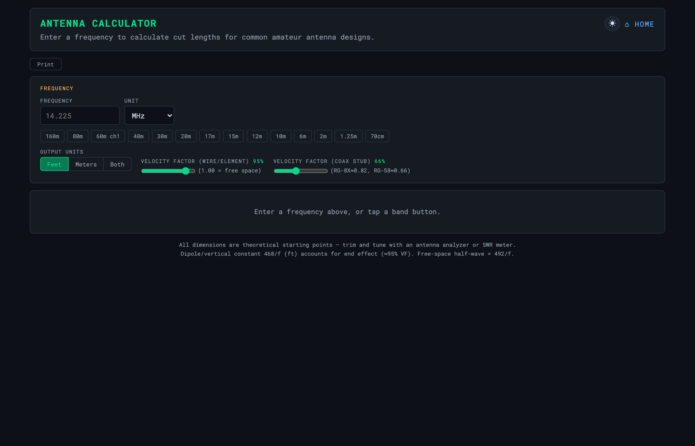
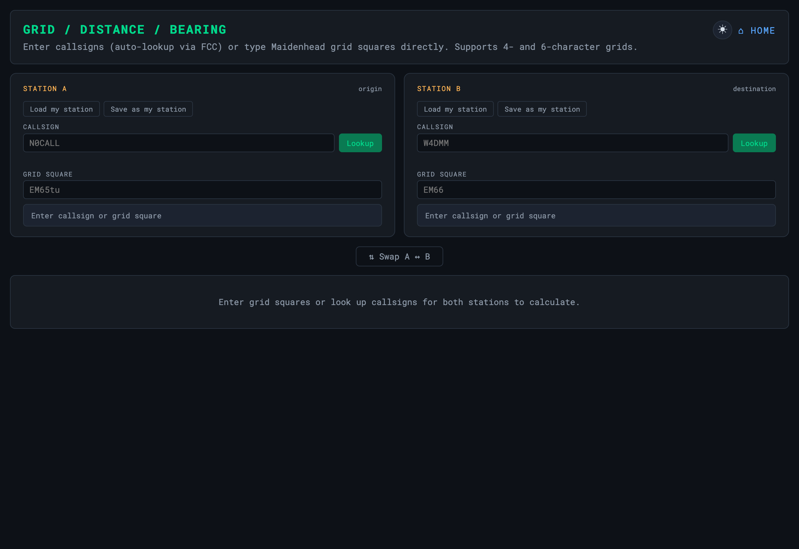
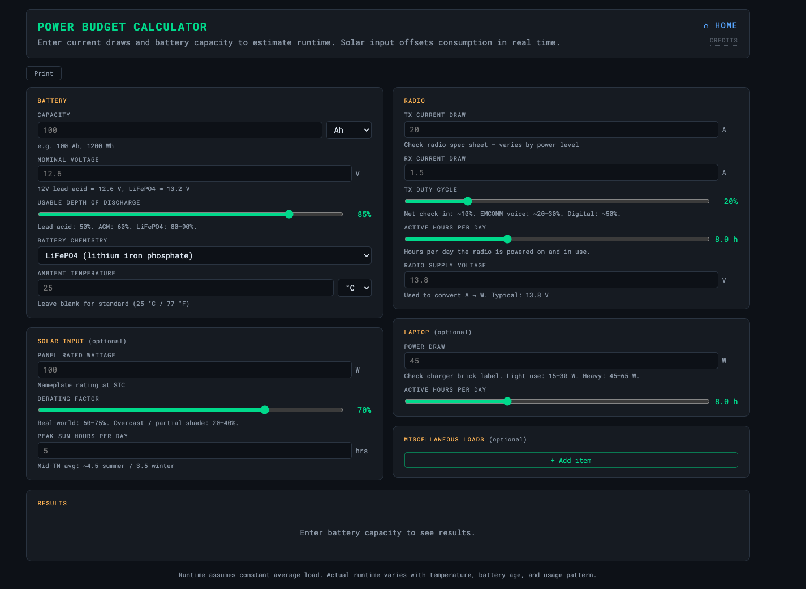
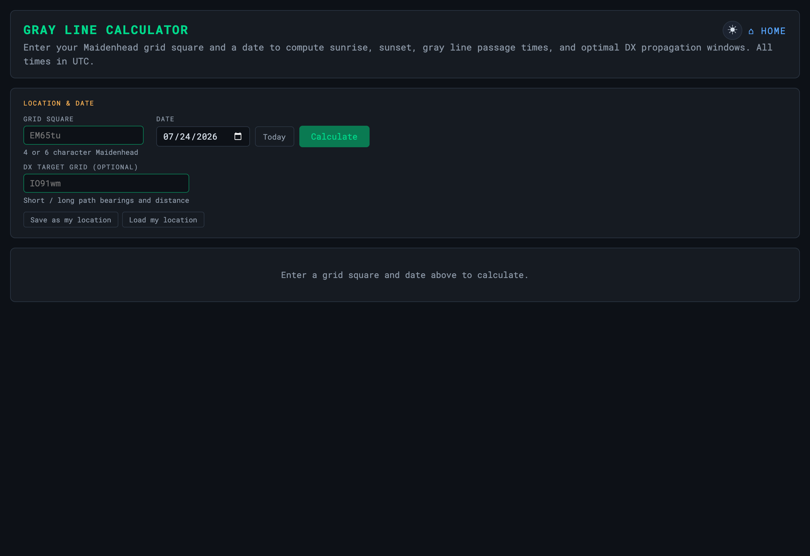
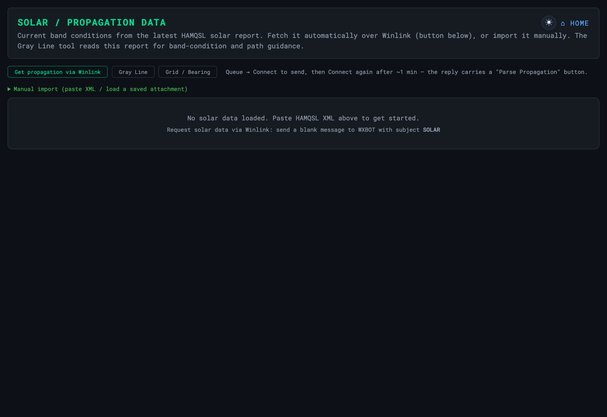

Calculators
Antenna, grid, power/battery, gray-line, and band-condition tools — all offline
A set of self-contained calculators and loggers. They are static HTML —
no server, no internet, no install — so they work from the dashboard, opened
directly, or from the USB bundle. State is saved to localStorage per browser.
Antenna Calculator
Dipole / vertical / loop lengths and feedline cuts from a target frequency.

Grid / Distance / Bearing
Maidenhead grid ↔ lat/lon, plus great-circle distance and heading between two points.

Power & Battery Budget
Estimates runtime from battery capacity and a per-device load list; exports a printable report.

Gray Line & Propagation
The gray-line terminator for HF DX timing, plus a band-condition summary and solar-indices reference.


The dashboard’s Imperial / Metric pill switches displayed temperature, altitude, and speed across the calculators at once.